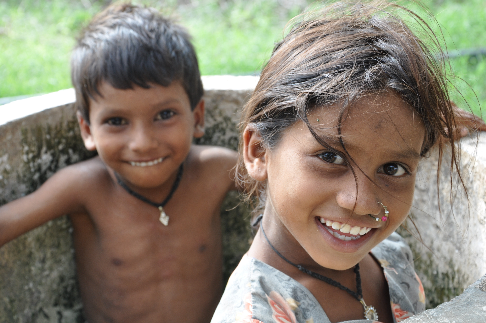

FUNDACION PARA EL DESARROLLO DE LA REGION NORTE COLOMBIANA
Quienes somos
LA FUNDACION FUNDANAC es una organización sin ánimo de lucro, adscrita al Sistema Nacional de Bienestar Familiar (SNBF) de acuerdo al Decreto 1137 de 1999, y podrá desarrollar su objeto social a través de los siguientes propósitos:
- Brindar atención integral a programas y proyectos dirigidos a menores de edad y otros grupos como menores embarazadas.
- Elaborar programas de mejoramiento y asistencia nutricional, salud física y oral de la población infantil, juvenil, adulta y la tercera edad, a través de toda la red de seguridad alimentaria
- Prestar asistencia social a las personas de estratos medios y bajos de cualquier parte del país.
- Asesorar proyectos y programas dirigidos a padres de familia de las comunidades económicamente más desfavorecidas, brindando capacitación y educación familiar comunitaria.

- Realizar propuestas de capacitación de tipo formal e informal a grupos organizados por medios masivos, radiales o escritos, en temas de salud, sociales, nutrición e investigación dirigidos a jóvenes y otros grupos comunitarios.
- Realizar propuestas de supervisión y asesoría a proyectos y programas del área social, administrativa, pedagógicas y de salud.
- Adelantar acciones tendientes a disminuir la problemática social y económica de los sectores más vulnerables de la sociedad.
- Realizar investigaciones, estudios y ensayos.
- Asesorar programas y proyectos del orden social, cultural y de salud dirigidos a grupos organizados en la comunidad.
- Brindar asesoría y supervisión a proyectos y programas del área nutricional, social, administrativa, pedagógica y de salud.
- Implementar estrategias pedagógicas que ayuden en la solución de problemas de comportamiento.
- Desarrollar las actividades que favorezcan la conservación de la salud física y mental de las personas.
- Planear y diseñar la planta física de un servicio de alimentación incluyendo la adquisición del equipo necesario.
- Organizar, asesorar y administrar el funcionamiento de servicio de alimentación en clínicas, hospitales, salas cunas, hogares de bienestar y otras entidades que presten este servicio a la comunidad.
- Suministrar paquetes alimentarios como refrigerios, almuerzos, meriendas, loncheras de acuerdo a las necesidades calóricos.
- Elaborar y planificar ciclos de minutas de acuerdo al presupuesto, edad, sexo, hábitos alimentarios y estado nutricional.
- Suscribir y ejecutar convenios y contratos con entidades oficiales y privadas, de orden local, nacional e internacional.
- Planear, ejecutar y evaluar programas de crecimiento y desarrollo dirigido a la población infantil.
- Organizar y dirigir gimnasio con programas individualizados según criterio médico y nutricional.
- Suministrar toda clase de alimentos perecederos y no perecederos o productos relaciones con los programas y compromisos que adquiera la Empresa.
- Realizar talleres de capacitación sobre el manejo, preparación y utilización de alimentos de alto valor nutricional, con el fin de mejorar la dieta de la población colombiana.
- Dar en forma permanente el servicio de orientación, asesoría y consejería a las instituciones que lo requieran sobre proyectos pedagógicos de beneficio social.
- Comercialización de toda clase de bienes y servicios.
- Planeación, ejecución y control de toda clase de obras civiles, hidráulicas y mineras.
- Brindar atención pedagógica que contribuyan en la solución de problemas sociales de nutrición y salud.
- Asesorar y administrar el funcionamiento de servicios de alimentación en clínicas, hospitales, salas cunas, hogares y bienestar, escuelas, colegios y otras entidades que presten este servicio a la comunidad.
- Suministrar paquetes alimentarios, refrigerios, almuerzos, meriendas de acuerdo a las necesidades calóricas, hábitos alimentarios y estado nutricional de la población a atender.
- Contratar con entidades del estado o particulares la realización de programas de capacitación en nutrición y salud dirigidos a grupos organizados de la comunidad.
- Vincular personal idóneo y responsable para cumplir a cabalidad los compromisos que adquiera la Fundación.
- Planear y desarrollar estudios ambientales con proyección científica que determinen el mejoramiento del ecosistema para el hombre.
- Diseñar y desarrollar proyectos que apunten hacia un marco de desarrollo sostenible para los seres humanos en áreas como: nutrición, educación ambiental, educación sanitaria, educación para prevención y control de desastres, mejoramiento y desarrollo de viviendas de interés social, construcción de equipamiento que se requiera de acuerdo a las necesidades y compromisos adquiridos por la Fundación.
- Prestar asesorías y consultorías de beneficios social sobre la problemática que se vive en la región y las soluciones que el estado, la comunidad internacional y la empresa privada puede ofrecer para tales efectos.
- La Fundación puede contraer toda clase de obligaciones y celebrar todos los actos y contratos que le permita la ley y sus estatutos.
- Elaborar estudios, consultorías, diseños y desarrollar y ejecutar planes y programas y proyectos de vivienda y saneamiento básico en aéreas urbano y rural para la población desplazada de los estratos 1, 2 y 3 que lo requieran y destinar recursos para ese fin.

Misión
FUNDANAC., orienta sus recursos y programas de manera preferencial a la población de estratos bajos, urbanos y rurales...
Visión
Constituirnos como una organización eficiente e innovadora a nivel programático, financiero e investigativo...